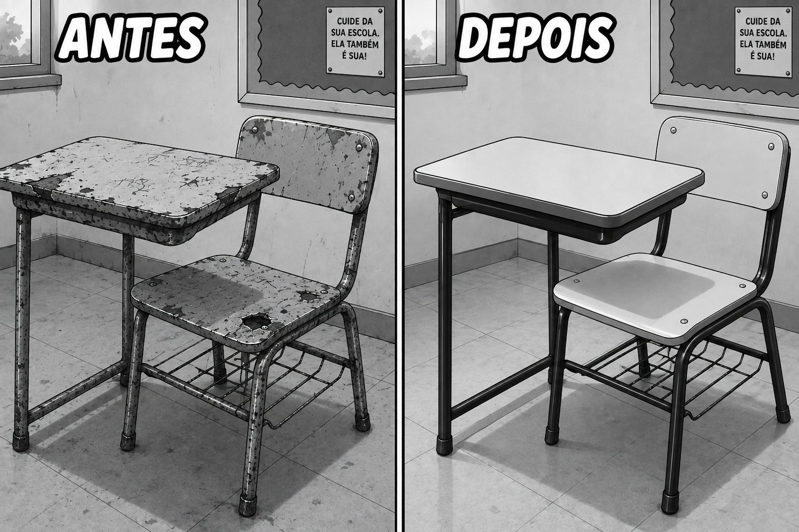
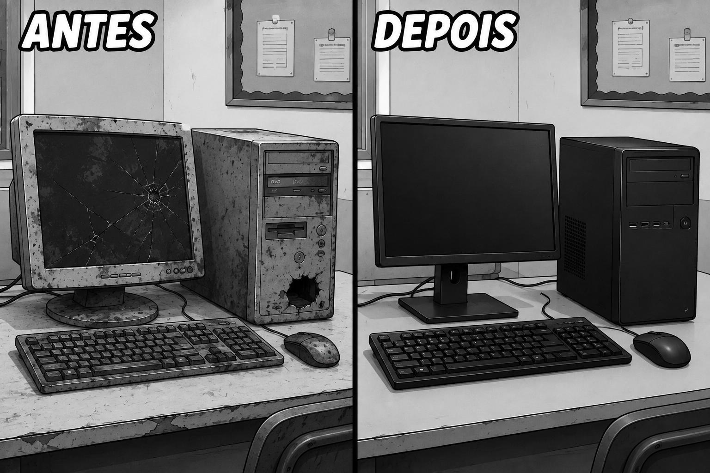
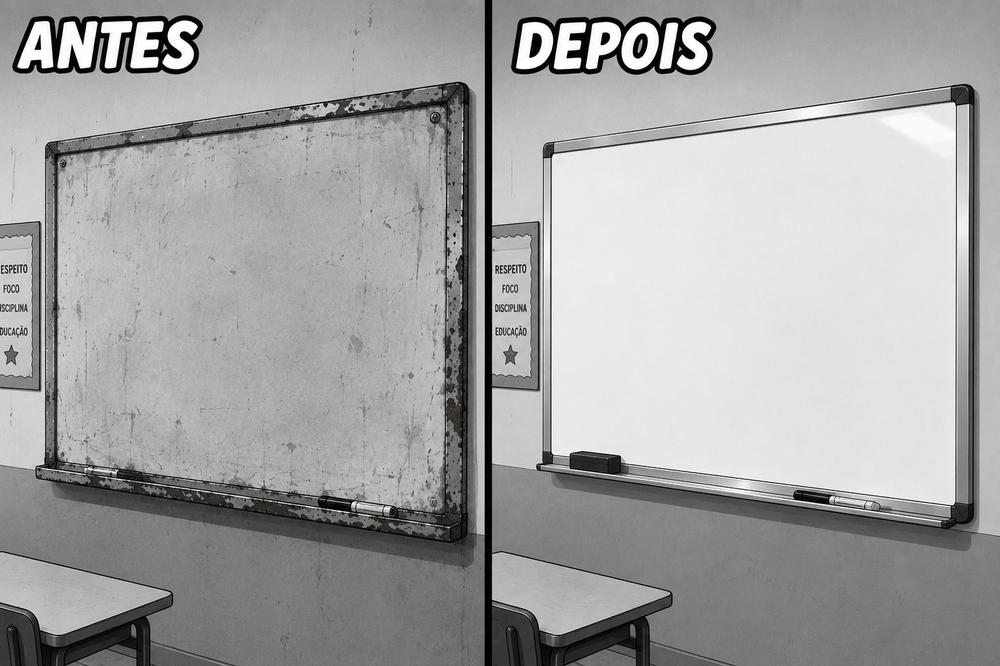
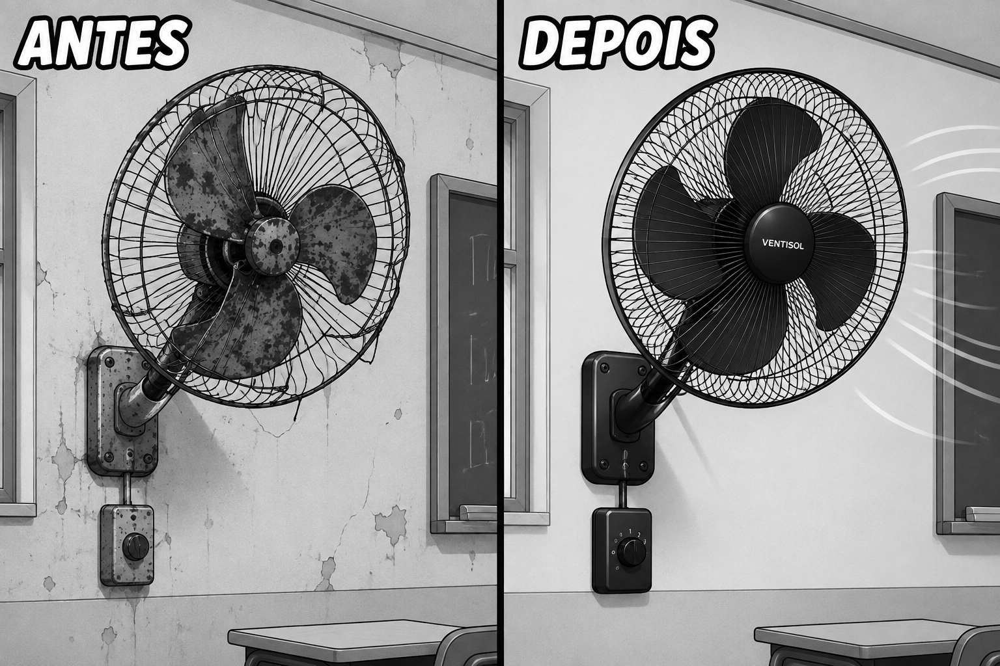

GAME DO SABER
NOSSA ESCOLA, NOSSO COMPROMISSO
O QUE NÓS PODEMOS FAZER PARA TORNAR NOSSA ESCOLA AINDA MELHOR?

As carteiras e mesas são ferramentas diretas do nosso aprendizado diário. Evitar riscar, colar chicletes ou danificar o mobiliário garante um ambiente confortável e limpo para nós e para as próximas turmas. Preservar as carteiras é demonstrar respeito com quem compartilha a sala conosco.

Os computadores nos conectam com o conhecimento global e pesquisas modernas. Usar os equipamentos com cuidado, não danificar periféricos e relatar qualquer problema técnico garante que o laboratório continue acessível para todos os alunos ampliarem suas habilidades digitais.

Os fones de ouvido auxiliam em atividades multimídia, aulas de idiomas e promovem um estudo mais concentrado e inclusivo. O manuseio correto dos cabos e o armazenamento adequado mantêm os aparelhos funcionando perfeitamente por muito mais tempo.

O quadro é o centro das explicações dos nossos professores. Manter a superfície limpa, utilizar apenas os marcadores ou gizes adequados e zelar pela estrutura evita desgaste precoce e facilita a visualização do conteúdo das aulas para toda a turma.

Uma sala de aula limpa e organizada melhora a concentração e o bem-estar de todos. Descartar o lixo nas lixeiras adequadas, manter as filas organizadas e cuidar da ventilação e iluminação cria um ambiente propício e agradável para o aprendizado diário.

Em dias quentes, os ventiladores mantêm o ambiente fresco e propício para o estudo. Zelar pelo funcionamento dos equipamentos, sem arremessar objetos ou mexer nas fiações, garante a segurança de todos e o conforto térmico nas salas de aula.
Conclusão:
O cuidado com o patrimônio da escola é responsabilidade de todos os estudantes, professores e funcionários. Os bens duráveis são fundamentais para o desenvolvimento educacional e proporcionam um ambiente mais agradável, seguro e acolhedor para toda a comunidade escolar!